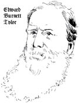
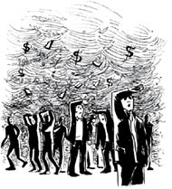
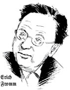
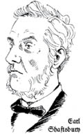
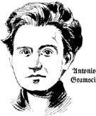
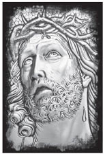

Bölüm 7

META FETİŞİZMİ VE İDEOLOJİ
Marx’ın çağdaşı ve kültür antropoloğu Edward Burnett Tylor, Primitive Culture (İlkel Kültür) adlı kitabında şunları yazar:

Bir nesneyi fetiş olarak tanımlamak için, bir ruhun nesnenin içinde cisimleştiği ya da nesne aracılığıyla eyleme geçtiği yahut iletişim kurduğu veya en azından nesneyi elinde bulunduranların böyle nesneler için alışkanlıkla öyle düşündüğü veyahut o nesnenin kişisel bilinç ve güç taşıyormuş gibi telâkki edildiği, onunla konuşulduğu, ona tapıldığı, dua edildiği, kurban adandığı, geçmişte ya da bugün destekçilerine gösterdiği davranışa karşılık ya sevildiği ya da kötü davranıldığı gibi açık ifadeler kullanılması gerekir.
Fetiş terimi, batılıların sömürgeci yayılmacılık aracılığıyla ilişkiye geçtikleri Afrikalı kabileler arasında rastlanan dinsel inanç ve uygulamalar için antropologlar ve Hıristiyanlar tarafından ortak olarak kullanılmaktadır. Burnett’in betimlemesinden fetişin birkaç özelliğini ortaya koyabiliriz:
1. İçinde fizikötesi bir güç ya da ruh bulunduğuna inanılan fiziksel bir nesnedir.
2. Onu elinde bulunduran kimse, o güç ya da ruhun bu fiziksel şey aracılığıyla iletişim kurduğuna inanır.
3. Bu kişi, elindeki nesnenin bir tür bağımsız bilinç, özerklik ve irade sahibi olduğuna da inanır.
4. Fetişi elinde bulunduran, o nesne sanki canlıymış, bir nesne değil de bir varlıkmış gibi onunla yoğun ilişkiler kurar.

Fetiş teriminin kapitalizm hakkında bir düşünme yolu olarak Marx’a neden çekici geldiği hemen görülebilir. Bu terim, kapitalizm hakkında bir düşünme yolu olarak bugün de bir potansiyel taşımaktadır. Gerçekten de Burnett’in betimlemesinden çıkarılan maddelere bakarsanız, çoğu televizyon reklâmında gözünüzün önünde oynaşan fetiş nesneleri görürsünüz.
Eğer modern Viktoryan toplumu, böylesi ilkel ve gerici uygulamaları fetişizm olarak çoktan terk edip geride bıraktığını düşünüyorsa Marx’ın onlara bir çift sözü var. Fetişizm, kapitalizmde hâlâ sağ ve salim olup meta biçimine bürünmüştür.
İnsanlar için şeyler arasındaki hayal ürünü bir ilişki biçimini alan, insanların kendilerinin belirli toplumsal ilişkisinden başka bir şey değildir. Bunun için de, bir benzetme yapmak istersek, din dünyasının sisli bölgesine yükselmemiz gerekir. Burada, insan kafasının ürünleri, kendilerine özgü hayatları olan, kendi aralarında ve insanlarla ilişki halindeki bağımsız biçimler gibi görünür. İnsan elinin ürünleri olan metalar dünyasında da böyledir. Emek ürünleri metalar olarak üretilmeye başlar başlamaz onlara yapışan ve dolayısıyla da meta üretiminden ayrılmaz olan bu şeye fetişizm diyorum.
Marx, Kapital, s. 82-83

Şeyler arasında olağandışı bir ilişki biçimi olduğunu varsayan belirli toplumsal ilişki nedir? Daha önce gördüğümüz sermaye döngüsü P – M – P+, insan soyunun tamamen denetimi dışında bir döngüdür. Kapitalistler bile onun isteğine uymak zorundadır, aksi halde kapitalist olmaktan çıkarlar. Bu birikim döngüsünün temeli üretim alanında yatar. Kapitalizmde özgür işçi üretim araçlarının mülkiyetinden ve kontrolünden koparılmıştır. Dolayısıyla üretim araçlarıyla onların ürettiği mallar, doğrudan üreticiden bağımsız, kendi başlarına bir yaşama geçer. Bu “şeyler” (para, sermaye, meta, faiz, fiyat, değer, vb.) arasındaki ilişkiler insanlar üzerinde hegemonya kurar, insanlar onlar üzerinde değil.
Bu “şeyler”, bir zamanlar insanoğlu için kontrol dışı ve tehlikelerle dolu doğanın taşıdığı aynı ürkütücü özellikleri edinir. Üretim güçlerinin kapitalizmden önce henüz olgunlaşmamış düzeyi, fetişi insanlar için çekicileştirmişti. Fetiş, kötü kadere ve iyi anlaşılamamış öbür gizemli güçlere karşı koruyuculuk görevi üstlenmişti.
Kapitalizmde üretim güçleri artık olgunlaşmıştır; doğal çevremizi denetim altına almış olmamız, onun atalarımıza saldığı korkuyu artık yenmiş olduğumuzu gösterir. Ama fetiş hâlâ yaşamaktadır çünkü şimdi de toplumsal ilişkilerimiz bizi ürkütmekte, tehlikeye atmaktadır. Bu ilişkiler denetimimizin ve irademizin dışındadır. Piyasa, sermaye, metalar, para yaşamlarımıza hükmetmekte, hareketleri milyonlarca kişinin kaderine karar vermekte, dayatmaları kaçınılmaz olmaktadır.
Bu meta fetişizminin bir yüzüdür: Şeyler bizim yaşamımızı yönetmektedir, biz onları değil. Bunlar irademizden bağımsız olmakla kalmamakta, tıpkı atalarımızın doğanın ellerinden aldıklarına ve tahmin edilemez davranışına gem vuramamaları durumunda olduğu gibi, bizim de baş etmek için elimizden hiçbir şeyin gelmediği bir doğa gücü gibi karşımıza çıkmaktadır. Sonuçta insanın toplumsal eylemlerinin ürünü olan ama ortak denetimimizden çıkan kapitalizm, yerçekimi yasası ya da Tanrı gibi bizden bağımsız bir varlık görünümüne bürünmektedir.
Kimi görünümleri korkutucu olsa da, başka durumlarda bu bağımsız “nesnellik”, kapitalist kültür sınırları içinde bir rahatlık ve avuntu kaynağı olmaktadır. Şimdilik verilen söz, bize bir doğa gücü gibi hükmeden sistemin en azından BÜTÜN toplumsal ve iktisadi çıkarlardan bağımsız olduğudur. Bütün partizan çekişmelerin üstünde, tarafsız bir düzenek olarak insan davranışını düzenlemekte, kişisel çıkarı sihirli bir el çabukluğuyla ortak uyuma ve dengeye dönüştürmektedir.
Ama meta fetişizminin bir yüzü daha vardır. Fetiş bize, eğer onu ele geçirebilirsek, sermayeye terk ettiğimiz gücümüzün azcığını geri alabileceğimizi vaat eder. Toplumsal zenginliğe ulaşma vaadiyle para ve kampanya, pazarlama, reklâm çığırtkanlıklarıyla bütün vaatleri peşine takan öbür metalar, eğer onlara sahip olabilirsek, bütün kaybettiklerimizin bir tür telâfisi işlevini görür.
Varlığımızın tek anlamı, özel mülkiyete dayalı gibi görünüyor.
Sahip olmak yerine olmak seçeneği, sağduyuya hitap etmiyor. Öyle görünüyor ki sahip olmak, yaşamımızın normal bir işlevidir: Yaşamak için şeylere sahip olmamız zorunludur. Üstelik şeylere, hoşumuza gitsinler diye sahip olmalıyız. En üstün amacı sahip olmak (çoğuna, daha çoğuna sahip olmak) diye kabul eden, birinden “bir milyon dolarlık adam” diye söz eden bir kültürde, sahip olmak ve olmak, birbirlerinin alternatifi olabilir mi? Tam tersine, olmanın tek anlamı sahip olmak gibi görünür; eğer birinin hiçbir şeyi yoksa kendisi de hiçbir şeydir.
Erich Fromm, To Have Or To Be?

Mutluluk konusundaki incelemeler Fromm’un olmak ile sahip olmak ayırımını doğrulamaktadır. Araştırmalar göstermektedir ki insanlar ne kadar çok “biri olma”yı bir şeylere sahip olmak diye tanımlarsa o kadar mutsuz olmaktadır:
Maddiyata düşkün olanlar duygusal olarak daha güvensiz, daha düzeysiz kişisel ilişkilere sahip, daha içtenliksiz, özerklik duygusu daha eksik, kendine güveni daha düşük kimselerdir. Çocuk iseler, kendilerini başarılarına bağlı olarak seven, onları maddiyatçı yetiştiren ana-babaları vardır.
Oliver James, The Selfish Capitalist
Sorun metaların, bir dizi harika görünüm içindeki maddi şeyler olmaları değildir. Kimse pöstekiden giysilere dönmek istemez. Sorun bu fetişlerin, eğer içinde yer aldıkları GERÇEK güç ilişkileri bastırılır ya da unutulursa, kökten güçsüzlüğün telafisi gibi işlev görmelerindedir. O zaman bile, gerçek güçsüzlüğümüze hitap eden asıl değil yedek nesneler oldukları için pek işe yaramazlar. Bizi gerçekten doygun kişiler yapmaz, mutlu etmezler. Dolayısıyla fetiş, zorunlu olarak içinde yer aldığı toplumsal ilişkileri bastırmaya yöneliktir.
Elimizde tuttuğumuz kâğıt para zararsız bir şey gibi görünür ama daha yakından bakınca kimi yaşamaya çalışan, kimi yaşamını para peşinde koşmaya adamış, kimi (çoğu) eline para geçirmek için canla başla uğraşan, … kimi paradan kaçınmaya çabalayan, kimi para için adam öldüren, çoğu her gün parasızlıktan ölen insanlarla dolu bir dünya görürüz.
John Holloway,
İktidar Olmadan Dünyayı Değiştirmek
Marx her ne kadar fetiş terimini Kapital’de pek sık kullanmasa da bu düşünce, yapıtının mimarisine sinmiştir. I. Cilt’in başlangıç bölümleri, kapitalist uygulamanın türettiği kendiliğinden beliren kavramlar, fikirler, alışkanlıklar ve bilinçliliklerin boy attığı mübadele ve dolaşım alanına ayrılmıştır. Bu gerçeklik alanı, fetişizmin gücüne yenik düştüğümüzde dolaysız görüntüsü içindeki gerçekliğin bizi sarsma biçimi, Marx’ın görünüm biçimi dediği şeydir.
Hem kapitalistin hem de işçinin hukuk konusundaki bütün düşünceleri, kapitalist üretim tarzının bütün gizemlileştirmeleri, bütün özgürlük yanılsamaları, bayağı iktisadın bütün özürcü laf ebelikleri, gerçek ilişkiyi görünmez kılan ve tam karşıtını gösteren bu görünüm biçimine dayanır.
Marx, Kapital, s. 518
Kapitalist piyasa ortamı serbestlik, özgürlük, yetkililik, bireysellik alanıymış gibi görünür. Bu da özgür sözleşmeli mübadelenin temelidir. Ama bu sadece “fiili ilişki” bastırılabildikçe sürebilir. Freud’a göre cinsel fetiş, erkek ruhunun kadın suretinde beliren hadımlaştırılma tehlikesiyle baş etmesinin bir yoludur. Marx’a göre ise fetiş, kadınlarla erkeklerin kapitalizmde maruz kaldıkları çok gerçek toplumsal hadım edilme tehlikesiyle baş etmesinin bir yoludur.
Aslında meta fetişizmi, cinsel fetişizmi bolca kullanır: Bir meta reklâmının, alıcının cinsel bakımdan daha güçlü, cinsel bakımdan daha doygun, karşı cinsin gözünde daha çekici olacağı sezdirilmeden yapılabildiğine pek rastlanmaz. (Gelecekteki insan emek gücünün özel aile aracılığıyla gerçekleştirilen “doğal” yeniden üretimine bu denli bağımlı olan bir ekonomide, eşcinsel ilişkiler daha sorunlu bir yere sahiptir.)
Eğer kapitalist piyasa söylendiği gibi özgürlük, serbestlik, yetkililik alanı ise, biz neden kapitalist piyasanın ötesine geçmeyi seçemiyoruz? Bu noktada fetişin öbür yüzü devreye girer: Sermaye, metalar, para, fiyat ve piyasalar, iktisatçıların ve politikacıların bize söylediklerine göre şeylerin kozmik düzeninin bir parçası olarak kabul etmek zorunda olduğumuz, bozulamaz ve dokunulamaz olduğu bir tür İkinci Doğa haline gelir.
Ürünün toplamsal biçiminin yanı sıra eylemin toplumsal karakteri ve bireylerin üretimdeki payı, bireylerin karşısında, onların birbirleriyle ilişkilerinde değil de onlardan bağımsız var olan, birbirlerine karşı kayıtsız bireyler arasındaki çatışmadan doğan ilişkilerine boyun eğen yabancı ve nesnel bir şey olarak görünür.
Marx, Grundrisse
Bir bakış açısına göre, eğer birbirimizle ilişkilerimizi, birbirine kayıtsız bireylerin ve mübadelelerin gelişigüzel çatışması olarak görürsek, o zaman bu çatışmaya aracılık eden “şeyler” (fiyat, değer, para, sermaye, meta, vb.) tıpkı yerçekimi gibi tamamen “nesnel” (yani bağımsız) bir görünüme bürünür.
Eylemlerin ve metaların her birey için yaşamsal bir koşula dönüşen genel mübadelesi (karşılıklı bağımlılıkları) burada bir nesne olarak kendilerine yabancı görünür.
Marx, Grundrisse
Ancak kapitalizmde toplumsal ve iktisadi ilişkiler gerçekten denetimimizden çıkmışsa, bu görünüm kısmi ve eksiktir, yerçekimi yasasının tersine çevrilememesine karşın, ilke olarak tersine çevrilebilen toplumsal ve tarihsel koşulların ürünüdür.
Ama bir başka açıdan bakıldığında, kapitalist toplumun görünüm biçimi, özerk etkinliklerin ve mübadelelerin tesadüfi çarpışmalarının ürünü olarak göründüğü kadarıyla, öznel ve bireysel özgürlüklere geniş bir alanın açıldığı izlenimini uyandırır.
A kişisi, B kişisinin veya B, A’nın metasına ihtiyaç duyar ama onu zorla ele geçirmez, tam tersine birbirlerini, iradeleri metalarına nüfuz etmiş olan meta sahipleri olarak görür. Böylece Kişinin yasal ağırlığı ortaya çıkar. ... Kimse kimsenin elinden malını zorla almaz. Her biri kendi elindekinden gönüllü olarak vazgeçer. … Her biri ötekine hizmet ederken kendine hizmet eder.
Marx, Grundrisse
Toplumun, mutlak olarak nesnel ve bizden bağımsız bir şey olarak görünmesi gibi, fetişizmin bu öbür yüzünün de, yalnızca, ilk olarak kapitalizm tarafından tarif edilen çok dar bir anlamda geçerli olduğunu artık biliyoruz. Bu görünümün pembe, olumlu, iyimser sonuçları, kapitalizmde süregelen gizlenmiş şiddeti, zorlamayı, hırsızlığı açıklamakta bütünüyle başarısızdır. Metada içselleşen kişilerin iradesi değildir, kişinin iradesinde içselleşen metaların dayatmasıdır.
Fetişin bu iki yüzü (bütünüyle nesnel, doğa-benzeri “şey” olarak toplum ve kişinin herhangi bir toplumsal belirlenme olmadan tamamen öznel özgürlüğü) birbirine eklenemez. Hatta sınır tanımayan özne, bireysel öznelliğe kayıtsız duran “şeyler”in nesne dünyası kadar korkutucu olduğuna göre, saf öznelliğin kendi olumsuz ikinci kişiliği vardır.
Kapitalizmde pek az nokta uyumlu birliğe ulaşır. Ne kullanım değeri ile mübadele değeri, ne emek ile sermaye, ne gerekli ve artık emek, ne kısa ve uzun dönem, ne araçlar ile sonuç, ne üretim ile tüketim, ne nesnel ile öznel, ne üretim güçleri ile üretim ilişkileri. Bütün bu karşıtlıklar kapitalist toplumların nasıl değişik yönlere çekildiğini gösterir.
Marx’ın meta fetişi kavramı, böylesi zıtlıkların bilincimiz ve ruh sağlığımız üzerinde ne oyunlar oynadığı konusunda bize bir düşünme yolu kazandırır. Nasıl olur da kapitalizm “dışımızda bir yerde” değil ama “içimizde”dir! Aynı kavram, kapitalist toplumların en önemli ideallerinin, değerlerinin ve inançlarının çoğunun kaynağını da açıklar. Meta mübadelesi yaşamın neredeyse evrensel bir parçası olunca, bunlar da mübadele eyleminin kendisinden türer.
Sermaye ile emek arasındaki mübadele, ilk olarak, bütün öteki metaların alım satımları gibi algılanır. Alıcı belli bir miktarda para, satıcı paradan farklı bir nesne verir. Hukuk bilinci burada, olsa olsa ... maddi bir fark görür.
Marx, Kapital, s. 518
Piyasada işçi ile kapitalist arasındaki mübadele, duyularımıza dayatma, zorlama olmadan yapılmış olarak ulaşır çünkü orada, o mübadele anında dayatma ve zorlama yoktur. İşçi mübadele yerine kolları zincirli getirilmemiştir. Kapitalist oraya bir araba dolusu silahlı fedaiyle gelmemiştir. Duyularımızla algılayabileceğimiz açık bir zorlama ya da sömürme yoktur. Ancak mübadeleyi daha geniş bir üretim kavramı içine oturttuğumuzda, bu maddi mübadelenin (emek gücüne karşılık para) gerisinde yatan sorunlu toplumsal ilişkileri görmeye başlarız. Bir kez daha olup bitenin nasıl göründüğü (görünür biçim) ile (işin özünde) nasıl gerçekleştiği arasında fark olduğu ortaya çıkar.
Neyse ki yaşamımızın toplam anlamı bir dizi piyasa mübadelesinden çok çok fazla olduğundan ve bir toplumsal ilişkiler ağı bizi işte, toplumda, iktisadi kesimlerde bütün dünyaya dağılmış metaların zincirleriyle birbirimize bağladığından, meta fetişizminin, bilincimizin ve deneyimimizin her yanını başarıyla ele geçirmesi olanaksızdır.
Ama yine de kapitalizmde, günlük yaşamın fetişist biçimlerine ilişkin, işlerin nasıl yürüdüğünü açıklamaya girişen gittikçe daha uyumsuz öğretilerin, daha tutarsız anlatıların yardımcı olduğu bir dizi kurum ortaya çıkar. Bu kurumlar, düşüncelerin, değerlerin, inançların, kim bilir daha nelerin gelişmesine ve farklı kapitalist toplumlara özgü tarihsel koşullara uyum sağlanmasına hizmet eder. Bu öğretiler ve anlatılar, olayları ve kapitalizmin çelişkilerini, kapitalizmi destekleyecek ya da en azından kapitalizmin temellerini sorgulatmayacak şekilde açıklamaya çalışmak zorundadır.
Hâkim sınıfın fikirleri her çağda hâkim fikirlerdir; yani toplumların maddi gücünü yöneten sınıf, zihinsel gücüne de hâkimdir. Maddi üretim araçlarını elinde tutan sınıf, aynı zamanda akli üretim araçlarını da denetler; genel olarak söylenirse, bu nedenle akli üretim araçlarından yoksun olanların fikirleri, ötekilerinkine tabidir. Hâkim fikirler, fikirler olarak algılanıp kavranan baskın maddi ilişkilerin ideal ifadesinden daha öte bir şey değildir; dolayısıyla bir sınıfı hâkim kılan ilişkiler, o sınıfın hâkimiyet ilişkileridir. Hâkim sınıfı oluşturan bireyler başka şeylerin yanı sıra bilinç sahibidir de. Demek ki bir sınıf olarak toplumu yönetirken, bir çağın kapsamını ve yönünü belirlerken, bunu her alanda yaptıkları açıktır, dolayısıyla başka şeylerin yanı sıra düşünürleri, fikir üretenleri de yönetir, kendi çağlarındaki düşüncelerin üretimini ve dağıtımını da yönlendirirler: Böylece onların fikirleri, çağın fikirleri olur.
Marx ve Engels, Alman İdeolojisi
Kapitalizmle uyumlu fikirler üreten anahtar kurumlardan bazıları eğitim sistemi, siyasal sistem, medya, din, hatta sendikalar gibi işçi örgütleridir. Bu kurumlarda, doğrudan yönetici sınıf değil ama Marx’ın deyimiyle “kavramsal ideologlar” çalışır. Sırtını devlete ya da şirket gücüne yahut ikisine birden dayayan bu kurumlar ya da onların kavramsal ideologları, çevrelerinde olup biten ve içinde yaşadıkları karmaşık, çelişkili gerçeklikleri yorumlayan çerçeveler türetir.
Düşünceleri ve değer sistemleri, gerçeklikte (kapitalist sistemin görünüm biçimlerinin [sermaye, metalar, mübadele, piyasalar, rekabet vb.] ve bunların etkilerinin gerçekliğinde) belirli bir zemine sahip olduğundan, bunların düşünce sistemleri ya da ideolojileri, halkın gözünde, belirli bir etkileyiciliğe, belirli bir çekiciliğe ve çoğu zaman da hayli endişe veren bir inandırıcılığa sahiptir.
Ama aynı zamanda, gerçekliğin bu görünür biçimleri, gerçekte nelerin olup bittiğinin genel bir anlamlandırmasını yapmadıkları, yapamadıkları için, bu hâkim fikirlerin sınırları, eksiklikleri, kör noktaları, zayıf tarafları vardır. Olayları herhangi bir düzeyde inandırıcılıkla açıklamakta zorlanır, bocalayabilirler. Ya da belli bir durumda, özellikle de artan bir muhalefet karşısında, bütün olarak kapitalizmin çıkarlarını savunmak ya da genişletmek için hangi hareket tarzının en uygun olduğunu açıkça ortaya çıkaramayabilirler.
Herhangi bir gerçek tarihsel konumda gönülleri ve akılları kazanmak için yapılan bir savaşın karmaşıklığı, Kapital’de Marx’ın asıl odaklandığı nokta değildi ama yine de bu konuda bir örnek vermiştir. Burada, farklı sınıflar ya da sınıfların içindeki kesimler arasındaki dört taraflı bir kavga, ifade edilebilecek olanlar ve bunların ne ölçüde yaygınlaştırılabileceği hakkındaki sınırları genişletir. Bu kavga, Tahıl Yasaları’nı yürürlükten kaldırma hareketi çevresinde olmuştur. Bu yasalar Britanyalı toprak sahiplerini daha ucuz dışalımlara karşı korumak için 1815’te konmuş ithalat vergileriyle ilgiliydi. Ama Serbest Ticaret hareketi bunların kaldırılması için girişimde bulundu. Bu hareket, çeşitli vicdani nedenlerle reformları destekleyen orta sınıf liberallerle Tahıl Yasaları’nın kaldırılmasında iktisadi çıkarları bulunan sanayicilerden oluşmaktaydı.
Tahıl Yasaları’nın iptali sanayicilerin işine geliyordu çünkü daha ucuz besin, emek gücünün değerini düşürecekti. İşçiler bu harekete tam tersi bir nedenle katılmıştı: Daha ucuz besinle, (sanayiciler ücretlerini düşürmezse!) başka mallara daha fazla harcanabilir gelir ayırabileceklerdi. Bazı orta sınıf çığırtkanları, sanayicilerin kesinlikle karşı olduğu 10 saatlik işgünü talebine arka çıkarak işçileri desteklemeye çalıştı. Tahıl Yasaları kendileri için çıkarılmış olan büyük toprak sahipleri ise bunların kaldırılmasına kesinlikle karşıydı. Bugün “kamusal alan” dediğimiz düzlemdeki bu karmaşık dört taraflı kavgayı Marx şöyle anlatır:
Tahıl Yasaları’nın kaldırılmasından hemen öncesi, tarım işçilerinin durumuna yeni bir ışık tutmuştu. Bir yandan, bu koruma yasalarının gerçek tahıl üreticisini aslında ne kadar az koruduğunu göstermek burjuvazinin çığırtkanlarının çıkarınaydı. Öte yandan, toprak aristokratlarının fabrika sistemini açıkça kötülemeleri, iliklerine kadar çürümüş bu kalpsiz ve miskin soyluların fabrika işçilerinin acılarına gösterdikleri sözde yakınlık ve yine bunların fabrika mevzuatı lehinde giriştikleri “diplomatik çaba” karşısında sanayi burjuvazisi hiddetinden kuduruyordu. Eski bir İngiliz atasözü şöyle der: Ne zaman iki hırsız birbirine düşse, namuslulara yararlı bir şey olur. Gerçekten de, üstün sınıfın iki kesimi arasında işçiyi kimin daha utanmazca ve daha çok sömürdüğü konusunda patlak veren gürültülü ve ihtiraslı çatışma gerçeğin bütün açıklığıyla ortaya çıkmasına yaramıştır. Shaftesbury Kontu, nam-ı diğer LordAshley, fabrikatörlere karşı giriştikleri insan severlik savaşında toprak aristokrasisine başkomutanlık etmişti. Bundan dolayı, Morning Chronicle’ın 1844-1845 yıllarında tarım işçilerinin durumuyla ilgili olarak yaptığı teşhirlerde gözde hedef olmuştu.
Marx, Kapital, s. 651

Bu gazete bir araştırma yazısında, fabrika karşıtı hareketin öncüsü Shaftesbury Kontu Lord Ashley’in ülkenin en düşük ücretli işçilerinden nasıl yüksek kiralar aldığını ortaya çıkardı. Marx, Morning Chronicle gazetesinin bulduğu ayrıntılı verilerden söz eder. Gazete elbette kapitalizm düşmanı değildi ama Liberal Serbest Ticaretçiler’in yayın organıydı. Ama hâkim sınıf ile yükselen işçi hareketi arasındaki çıkar çatışması bağlamında ideolojik üretim aynı zamanda ideolojik çatışmaya dönüşür. Bu eşitler arası ya da adil bir çatışma değildi ama yine de gönülleri ve akılları kazanma savaşı, bu durumda medya tarafından açılan tartışmanın sınırlı anlamını aşıp gerçeklerin ebesi olabilir. Bir işçi, halka açık şekilde yürütülen genel tartışmalardan, işçilerin çıkarlarını toprak sahibinin de sanayicinin de içtenlikle savunmadığı ve orta sınıf liberalinin, vicdanına dayanarak, yarım yamalak reformlar için arabuluculuk yapmaya çalıştığı sonucunu pekâlâ çıkarabilirdi.
Hâkim fikirler hâkim sınıfların fikirleridir diyen Alman İdeolojisi’nin bu formülü, filozofların ve ahlakiyatçıların kendi inanç sistemlerinin toplumsal ve iktisadi çıkarlar gibi adi bir şeyden bağımsız olduğunu düşünme eğilimlerine karşı bir yaylım ateşi açılması anlamına gelir. Ama Marx’ın Kapital’de verdiği örnek, birkaç şeyin bu formülü karmaşık hale soktuğuna işaret eder:
Hâkim fikirler tektür olmayıp farklı tellerden çalabilir (burada hâkim sınıfın her iki kanadı da yükselen işçi hareketini kendi yanına çekmeye çalışmıştır).
Hâkim fikirler, şu ya da bu derecede, tam da onlara daha ikna edici şekillerde hitap edebilmek için, alt sınıflardan alınan öğelerden, bakış açılarından, değerlerden vb. oluşur (böyle olmasaydı, Marx’ın örneğinde, işçilerin sömürülmesine yönelik ahlaki öfke neden kaynaklanabilirdi?).
Marx’ın ideolojik çaba konusundaki düşüncelerini en ince biçimde işleyip geliştiren Marksist, Antonio Gramsci’dir. Birinci ve İkinci Dünya Savaşları arasında İtalyan Komünist Partisi’nin en önde gelen isimlerinden biriydi. Sınıflara ayrılmış bir toplumda kavramsal ideologların ya da aydınların rolünü düşünme konusunda bir çerçeve oluşturmuştur. Gramsci bu çerçeveyi, Marx’ın toplumun iktisadi yapısı, yani üretim tarzı ile zihinsel üretime bulaşan bütün o özel ya da kamu örgütleri anlamındaki üstyapısı arasında yaptığı ayırımı üzerine çizmiştir.

Aydınlarla üretim dünyası arasındaki ilişki, köktenci toplumsal gruplarla olduğu gibi doğrudan değil, değişik derecelerde, aydınların “işlevcileri” olduğu o karmaşık üst yapı ve toplumun bütün dokusu “aracılığı” ile kurulur… Başlıca iki üstyapı kurabiliriz: Biri “sivil toplum” denen, ortak olarak “özel” adıyla anılan organizmalar topluluğu, öteki “siyasal toplum” ya da “Devlet”. Bu iki düzey, bir yandan hâkim sınıfın bütün toplum üzerinde kurduğu “hegemonya”ya, öte yandan Devlet ve “yasal” hükümetin birlikte uyguladıkları “dolaysız hükmetmeye” karşılık gelir…Aydınlar hâkim grubun “yardımcıları” olup toplumsal hegemonyanın ve siyasal iktidarın ikincil işlevlerini yerine getirir. Bu işlevler şunlardan oluşur: 1. Hâkim temel grup tarafından toplumsal yaşama dayatılan genel yöne, büyük halk yığınlarının “kendiliğinden” razı olması. Bu rıza, “tarihsel” olarak, kendi konumu ve üretim dünyasındaki işlevi nedeniyle hâkim grubun itibarından (ve onun sonucunda doğan güvenden) kaynaklanır. 2. Devlet aygıtının, eylemli ya da eylemsiz “razı olmayan” grupları “yasal” biçimde disiplin altına girmeye zorlayan gücü. Ancak bu aygıt, kendiliğinden rıza olmadığı zaman komuta krizi çıkabilir beklentisiyle bütün toplum için oluşturulmuştur.
Antonio Gramsci, Hapishane Defterleri
Aydınlar ile üretim dünyası arasındaki ilişki, bütün toplum tarafından ve üstyapıdaki karmaşık işbölümünce biçimlendirilmiştir. Gramsci, sivil toplumun özel örgütlenmelerini, yasal ve fiziksel güç ve zor kullanmayla ilişkilendirme eğiliminde olduğu devletten ayırır. Gönüllü üyeliğe ve kullanıma dayanan özel kuruluşları hegemonyayı tesis etme işlevi ile ilişkilendirir. Hegemonya, yığınların, hâkim sınıfın denetimindeki toplumsal ve iktisadi yaşam yönünde rıza göstermesiyle şekillenir. Bu rıza kendiliğinden olur, başka türlü olmaz (o yüzden tırnak içinde yazılmıştır) ama bütün kültürel ve siyasal boyutlarda gönüllerin ve akılların kazanılması için verilen acımasız savaşın sonucudur. Bu razı olmaya karşı çıkılırsa ya da bu rıza hâkim sınıfı tehdit edecek boyutlarda azalırsa, o zaman devletin güç ve zor kullanımına başvurulabilir.
Ancak sivil toplum ile devlet arasındaki bu keskin ayırım, bazı kurumlar için pek açık değildir. Siyasal partiler devletin bir parçasıdır ama demokrasilerde rızayı (oyları) almak zorundadır ve üyeleri gönüllüdür. Aile özel bir hücredir ama üyelik (çocuklar için) gönüllü değildir, çoğu zaman maddi olarak, her zaman ideolojik olarak devletçe desteklenir. Eğitim devletin bir parçasıdır ama, gerektiğinde zorlayıcı güçle desteklense de, çoğunlukla rıza ile yürütülür.
Yine de Gramsci’nin ileri sürdüğü tezin sarsıcılığı gayet açıktır. Hâkim sınıf, hâkim sınıf olmak istiyorsa, toplumsal ve iktisadi yaşam üzerinde kuracağı manevi ve zihinsel önderliğin (hegemonyanın) uyumlu şekilde yönetilmesinde aydınların anahtar rolü vardır.
Çoğu siyasetçi, bilim insanı, gazeteci, din adamı, akademisyen, araştırmacı, reformcu kendisinin ya da örgütünün böyle bir rolü oynadığına inanmaz. Bunların öylesine ayrıntılı biçimde geliştirdikleri mesleki kurallar, yaptıklarını biçimlendiren toplumsal ve iktisadi çıkarları örtmeye yardım eder. Ama bunların kurumlarının öncelikle aydınlarca yürütüldüğü, devlet ve/veya şirket gücünün neyi, nasıl, neden yaptıkları üzerinde inanılmaz derecede etkili olduğu, işleri yürütürlerken de sıradan halkın pek az girdi sağladığı ya da söz hakkı olduğu gerçeği, bunun tersinin doğru olduğunu kanıtlar. İşte size bu hegemonyanın kurulmasında mesleki çalışma usullerinin medyada nasıl işlediğinin örneği:
ABD’de gazetecilik mesleki kurallara bazı anahtar değerlerin katılmasıyla gelişmiştir; o değerlerin doğal olarak nesnel ya da mesleki olduğu konusunda kanıt yoktur. … Konu seçimine ilişkin anlaşmazlığı ortadan kaldırmak için, mesleki gazetecilik, resmi kaynakların (sözgelimi resmi görevlilerin, tanınmış kişilerin) yaptığı her şeyi yayımlanabilir haberin kaynağı sayar. … Resmi kaynakların dile getirmediği konuları haberleştiren gazeteciler, meslek ilkelerine aykırı davranmakla, haberde yan tutmakla suçlanır. … Gazeteciliğin ikinci hatası bağlamsallıktan kaçınmasıdır. … Anlamlı bir bağlam ve uygun arka plan vermek, mesleki standartlara göre, gazetecinin belli bir konuma geçme eğiliminde olmasıdır, bu da mesleğin kaçınmakta kararlı olduğu tartışmayı doğurmaktadır. … Gazetecilik, bırakın siyasal açıdan yansız olmayı, gazete sahiplerinin ya da reklam verenlerin ticari amaçlarına, büyük işletmelerin siyasal amaçlarına hizmet eden değer yargılarını işe karıştırır. … Böylece suç haberleri, kraliyet ailesine ya da ünlülere ilişkin haberler kabul görür.
Robert W. McChesney, The Problem of the Media
Yine de Gramsci, rıza alma sürecinde yer alan karmaşık, dağınık, dinamik, karma diyalog sürecine karşı duyarlıydı. Bu sürecin belirleyici özelliği, saf öğretilerin tepeden dikte edilmesinden çok, sınıf çizgilerini aşan, eşitsiz, karmakarışık, farklılaşmış, çoğu zaman kitlelerin diş gıcırdatarak razı oldukları ama bölgesel ya da sınıfa özgü en azından birkaç öğenin hâkim sınıf ideolojilerine katılması pahasına varılan uzlaşmalardır. Aşağıdaki alıntıda Gramsci, 1930’lar İtalya’sında tek bir egemen kuruluşun, Katolik Kilisesi’nin rolünü açıklamaktadır:
Sağduyunun başat öğeleri dinden alınmıştır. … Ama dine ilişkin olarak bile önemli bir ayırımın yapılması gerekir. Her din, Katoliklik bile … gerçekte farklı, çoğu zaman ters görüşlü dinlerin bileşkesidir: Köylü Katolikliği, küçük burjuva ve şehirli işçi Katolikliği, kadın Katolikliği, hatta aydınların Katolikliği bile vardır ve bu da çeşitliliğe sahip ve kopuktur. Ama sağduyu üzerinde, mevcut çeşitli Katolikliklerin sadece kaba ve az işlenmiş biçimleri etkili olmaz. Önceki dinler, bugünkü Katolikliğin erken biçimleri, yaygın sapkın hareketler, eski dinlerle bağlantılı bilimsel boş inançlar, vb. günümüz sağduyusunu etkilemiş ve onun bileşenleri arasına katılmıştır. Sağduyuda, “gerçekçi”, maddi öğeler, yani kaba duyuların dolaysız ürünleri baskındır ama bu, dinsel öğeyle çelişmez, tersine bu öğeler “batıl”dır, eleştiri dışıdır.
Gramsci, The Modern Prince and Other Writings

Gramsci bize ideolojilerin nasıl çözümleneceği konusunda bir model önermektedir. Katolikliğin birlik içinde ve uyumlu bir ideoloji olduğu görüntüsünün arkasına sızmakta ve onu oluşturan farklı çizgileri belirlemektedir. Katolikliğin birliği, çeşitli sınıflara, bölgelere ve hatta kendine Katolik diyen insanların cinsiyetine göre dönüşmekte, farklılaşmaktadır.
Gramsci daha sonra Katolikliğin, halkın bazı kesimlerinin bilincinde hâlâ aktif olan başka dinsel duygularla bir araya geldiğini ve onlarla uğraşmak zorunda olduğunu belirtir. Son olarak da dinin, sağduyu içinde kapitalist toplumun günlük gerçekliğinde kök salmış “maddiyatçı” felsefenin emrine girdiğini ileri sürmektedir.
Derken iddiasında ani ve beklenmedik bir kıvrılmayla Marx’ın meta fetişizmi ile din arasında kurduğu benzerliğe dikkat çekerek dinsel maneviyatçılık ile kaba maddiyatçılığın aslında birbiriyle çelişkili olmadığını söyler.
Katolikliğin sağduyu üzerindeki etkisini oluşturan çeşitli öğelerin çelişkili doğasını ortaya serdikten sonra, okuyucuyu aniden allak bullak ederek bize dinsel görünüm ile kaba maddiyatçılık arasındaki benzerliği, yani kapitalizmin beslediği, sözgelimi sermaye, metalar, vb. şeyleri sorgusuz sualsiz kabul etmek ile onun kadar kaderci bir dindar yaklaşımla, her ne olursa olsun “Tanrının emri” demek arasındaki gizli benzerliği hatırlatır.
Genel olarak bakıldığında Gramsci sağduyuyu, geçmişten ve bugünden devşirilmiş kültürel malzemenin ilgisiz parçalarının, hegemonyacı kuruluşlarca biçimlendirilmiş ama aynı zamanda günlük yaşamın koşullarının örsünde dövülmüş çelişkili bir karışımı olarak görür. Sağduyu, parçalı ve çelişkili olduğundan, hâkim sınıfın kültürel cephaneliğinde zayıf bir noktadır. Bilinçte, sağduyunun terk edilmesi ve Gramsci’nin iyi duyu dediği şeyin güçlendirilmesi için geliştirilebilecek olan boşluklar ve yarıklar açar. Ancak böyle bir gelişme, siyasal örgüt ve ortak eylem gerektirir.
Ama sağduyunun parçalı yapısı aynı zamanda hâkim sınıfın işine yarar. Sağduyunun, kendisini oluşturan uyumsuz öğeler ya da kendi kaynakları üzerinde hiçbir zaman ciddi şekilde durmayarak, görece tutarsız kalması, hâkim sınıf için tümüyle kabul edilebilir bir durumdur. Neden? Tutarsızlık, karşı çıkmanın temeli değildir de ondan.
Gramsci’nin yaklaşımını benimsersek Hollywood’un, Gramsci’nin zamanındaki Katolik Kilisesi ile aynı tür resmi birliğe ve güce sahip olduğunu görürüz. Film sanayiinin merkezileşip yoğunlaşması Hollywood’a küresel bir erişim alanı sağlamıştır. Meta biçiminin Hollywood’a sızmış olması onun her tarafını, tuhaf yapısını, yıldızlarını, özel efektlerini, ürün yerleştirmesini etkilemiştir. Yine de Gramsci’nin Katolik Kilisesi’nde bulduğu, farklı “felsefeler”in çelişkili bileşimini Hollywood sinemasında yakalayabiliriz.
Sözgelimi abuk sabuk sorunlara getirdiği kapitalist tarzda bireysel çözümlerle yoğrulmuş olsa da dev şirketlere yarı-Marksist eleştiriler yapan Hollywood filmlerine rastlamak olasıdır. Tıpkı Katolik Kilisesi’nin İtalya’daki çeşitli koşulları ve sınıfları içerip uyumlaştırırken bir ideolojik birliği koruması gibi, Hollywood da ara sıra eğlendirme amacıyla dev şirketlere yönelik kızgınlıkları ve yaygın endişeleri kapsamak ve hatta bunlardan yararlanmak zorundadır. Şirketleşmiş film dünyasının kalbi olan siyaseten ilerici, yaratıcı yeteneğin bir kaldıraç gücü vardır.
Güç kazanmaya yönelik kurumsal stratejinin kritik açmazı, her bir filmin kendi mini-markasıyla satılmak zorunda olmasıdır. Bir filmin başında görülen logo, şirketin ürününün satılmasını sağlamaz; arka planda gerçekleştirdikleri ölçekleri büyüyen (ve gişe gelirlerinden düşülen) anlaşmalar sayesinde kurumsal medya yapısına çöreklenen pazarlama yöneticilerinin ya da temsilcilerin ücretlerinin ödenmesini de sağlamaz. Filmi sattıran yıldızlardır, yönetmenin ünüdür, özel efektlerdir, öykünün kalitesidir. Filmin içeriğinde seyirciyi çeken bir şeyler olmalıdır. Bu da şu anlama gelir: Eğer bir toplumsal görüşe sahip, acar film yapımcıları, şirketin iş sürecinde sözü geçen birilerini fikirlerinin satacağına inandırabilirse, kavramlarına bir yer açabilir, kendilerine yönetmenlik yetkileri sağlayabilir.
Ben Dickinson, Hollywood’s New Radicalism
Ana akım filmler bu bağlamda ana akım haber gündemine ya da ana akım siyasete göre halkın duygularını daha fazla benimseyip yansıtabilir. Son ikisi, politik karar alma süreçlerinin sorunlarına daha kararlılıkla değindiği, dolayısıyla egemen toplumsal ve iktisadi çıkarlar üzerinde doğrudan sonuçlar doğurduğu için, buralarda ses duyurabilme yelpazesi, şirketleşmiş film sanayii ile karşılaştırıldığında daha dardır.
Dünyanın pek çok yerinde neoliberal siyaset kural olduğundan, siyasetin dili ve idealleri, dev şirketlerin dilinden ve ideallerinden hiç ayırt edilemez hale gelmiştir. Piyasadaki mübadele gibi, demokratik seçimlere katılım da, eşitlik, özgürlük ve bireysellik biçimini almaktadır. İşçi ile kapitalist arasındaki mübadelede olduğu gibi, gerçek eşitsizlikler, kısıtlar, sınıf gücünün kullanılması gözlerden saklanır. Büyük çaplı reklamlar, halkla ilişkiler, medya çığırtkanlığı gelecek kuşakların siyasi liderlerini yetiştirmeye yarar ama öykü hep aynı sonla biter: Vaatlerle gerçekler arasındaki uçurumun genişlemesi nedeniyle çoğunluğun düş kırıklığına uğraması.
Bunda hayret edilecek bir şey yok. Daha oylar sayılmadan dev şirketler siyaset gündemini belirlemiş ve denetim altına almış olur. Bizse, halk olarak, o gündemi hangi politik grubun takip edeceğini belirlemek için oy veririz. Çoğu gelişmiş kapitalist ülkede ama özellikle Amerika ve Birleşik Krallık’ta ana akım siyaset büyük ölçüde terk edilmekte, neoliberalizmde temsili demokrasinin içi gittikçe daha çok boşaltılmaktadır.
Yirminci yüzyılın sonunda şirket düzeni, bütün yapının altını oyması beklenen bir dizi kabaran çelişkilere karşın, geçmişteki herhangi bir döneme göre daha istikrarlı, daha denetim altında görünmektedir. Bunun en önemli nedeni, sistemin, küreselleşmiş bedeniyle, hem devlet hem de sivil toplum üzerindeki eşi görülmemiş bir ideolojik ve kültürel hegemonyayı sürdürebilmiş olmasıdır. … Günlük çekişmelere ve avam hareketlerine karışan halk katmanlarının tersine tipik elitler, kişilikleri ve amaçları paramparça eden ünlü “postmodern” hastalıktan zarar görmemektedir; içsel bölünmelere karşın sınıflarının genel yönlenmesi çok daha bütüncüldür. Sermaya daha akışkan, daha hareketli, daha küresel hale geldikçe, maddi ve teknolojik kaynaklar daha yoğunlaştıkça, çokuluslu şirketler kelimenin tam anlamıyla önlerindeki (çok güçlü ulus devletler dahil) her şey için nitel olarak yeni kaldıraç güçleri edinmektedir. … İktisadi bunalımlar, toplumsal kutuplaşmalar, sivil direnişlerle hırpalanan (sonunda ekolojik felaketlerle yüz yüze gelen) bir dünyada şirket egemenliğinin sürdürülebilirliği ayrı bir konudur.
Carl Boggs, The End of Politics
Bu bağlamda, fetişin gücü, kamusal alanın ticari değerler tarafından sömürgeleştirilmesinden sayısız kişisel terapi türünün ortaya çıkmasına, teknoloji fetişizminden doğa fetişizmine, şaşkınlık uyandıran farklı egzotik biçimler alan dinin artan çekiciliğinden alternatif siyasetin parçalanarak tek tek “yönetilebilir” başlıklara ya da “yaşam tarzları”na dönüşmesine, halkın hoşnutsuzluğunun parçalanmasından kişisel geri çekilmelere ve acıların bazıları yasal, bazıları yasadışı olan farklı ilaç türleriyle uyuşturulmasına kadar sayısız biçimler alarak artmaktadır. Fetiş, tanımı gereği, sorunun özüne ya da ölçeğine hiç dokunmadan avutur, uyuşturur. Bu arada dünya felaket üzerine felaket çıkararak sermayenin keyfine göre döner durur.